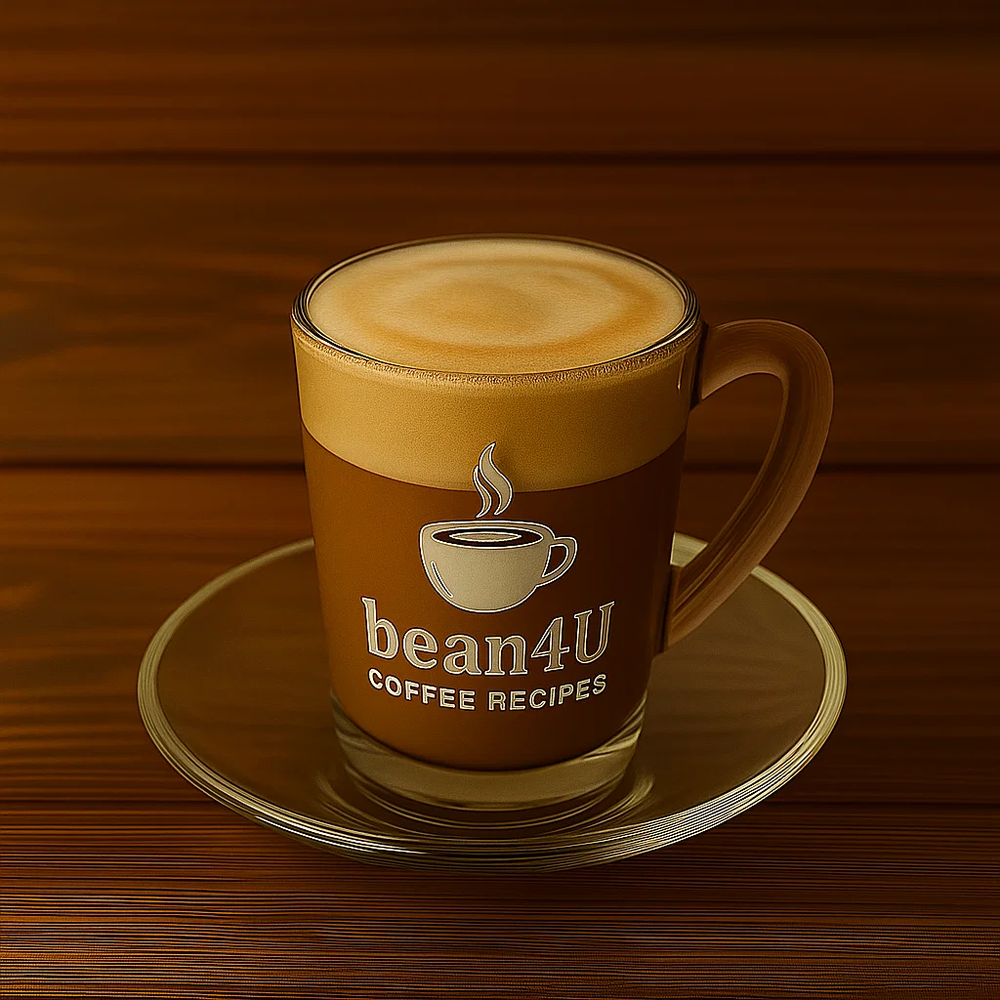

Cortado

Ingredients
- 1 shot espresso (30ml)
- 30ml warm milk
Preparation
- Brew espresso into small glass
- Heat milk to 60°C (no foam)
- Pour equal parts milk to espresso
- Serve in 60-80ml glass
- Here is a youtube short quickly explaining it:
- short Explaination
Video from @Ryantagcoffee
Channel